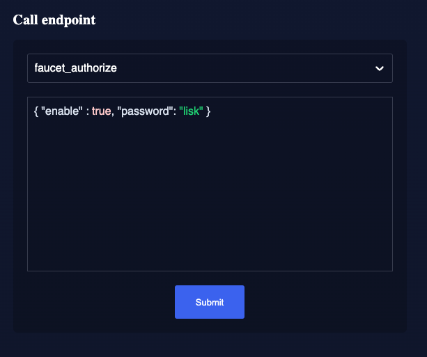
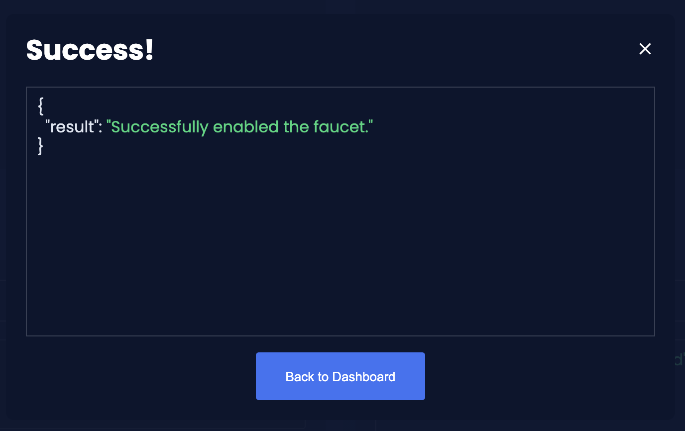

How to enable a Faucet for testing
The Faucet plugin provides a user interface in the browser to receive a certain amount of tokens on request. The Faucet plugin is a useful tool to use in devnets or testnets.
The Faucet plugin includes the following features:
-
It enables sending tokens to different accounts from a faucet for testing.
-
It allows customizing the faucet UI with a custom logo and application URL.
One account is always connected to the faucet, to provide the tokens to be distributed through the faucet. To prevent the faucet from running dry, the faucet account should always have an adequate enough balance to be able to provide the requested tokens to users.
1. Installation
With Lisk v6 the default plugins come pre-installed after an application is initiated. You can check the package.json file of the blockchain client to ensure the installation is correct.
"dependencies": {
"@liskhq/lisk-framework-faucet-plugin": "0.3.0",
// [...]
},Otherwise to register the Faucet plugin, first install it with NPM:
npm i @liskhq/lisk-framework-faucet-pluginNow open the plugins.ts file of the blockchain client, import the Faucet plugin, and register it with the application as shown below:
/* eslint-disable @typescript-eslint/no-empty-function */
import { Application } from 'lisk-sdk';
import { FaucetPlugin } from '@liskhq/lisk-framework-faucet-plugin';
// @ts-expect-error Unused variable error happens here until at least one module is registered
export const registerPlugins = (app: Application): void => {
app.registerPlugin(new FaucetPlugin());
};Save and close plugins.ts.
|
It is essential to enable WS API and configure the |
After updating the custom_config.json file, build the blockchain client again:
npm run build2. Configuration
Choose one account with a high enough token balance as the token source for the faucet. For example, use one of the genesis validators for the faucet account.
[
{
"address": "lske5sqed53fdcs4m9et28f2k7u9fk6hno9bauday",
"keyPath": "m/44'/134'/0'",
"publicKey": "a3f96c50d0446220ef2f98240898515cbba8155730679ca35326d98dcfb680f0",
"privateKey": "d0b159fe5a7cc3d5f4b39a97621b514bc55b0a0f1aca8adeed2dd1899d93f103a3f96c50d0446220ef2f98240898515cbba8155730679ca35326d98dcfb680f0",
"plain": {
"generatorKeyPath": "m/25519'/134'/0'/0'",
"generatorKey": "b9e54121 e5346cc04cc84bcf286d5e40d586ba5d39571daf57bd31bac3861a4a",
"generatorPrivateKey": "b3c4de7f7932275b7a465045e918337ffd7b7b229cef8eba28f706de8759da95b9e54121e5346cc04cc84bcf286d5e40d586ba5d39571daf57bd31bac3861a4a",
"blsKeyPath": "m/12381/134/0/0",
"blsKey": "92f020ce5e37befb86493a82686b0eedddb264350b0873cf1eeaa1fefe39d938f05f272452c1ef5e6ceb4d9b23687e31",
"blsProofOfPossession": "b92b11d66348e197c62d14af1453620d550c21d59ce572d95a03f0eaa0d0d195efbb2f2fd1577dc1a04ecdb453065d9d168ce7648bc5328e5ea47bb07d3ce6fd75f35ee51064a9903da8b90f7dc8ab4f2549b834cb5911b883097133f66b9ab9",
"blsPrivateKey": "463dd3413051366ee658c2524dd0bec85f8459bf6d70439685746406604f950d"
},
"encrypted": {}
},
]Use Lisk Commander to encrypt the privateKey of the account with a password.
Save the password securely as it will be required to enable and disable the faucet later.
lisk message:encrypt "d0b159fe5a7cc3d5f4b39a97621b514bc55b0a0f1aca8adeed2dd1899d93f103a3f96c50d0446220ef2f98240898515cbba8155730679ca35326d98dcfb680f0" --pretty
? Please enter password: [hidden]
? Please re-enter password: [hidden]
{
"ciphertext": "026e354440b9a94476fcda802bab7cff00be291b3a2e9f28b74b03bcc4da3475a0139e6f261799733ea689ddf0b8e1c34cac539d234e4c6c700bc3b229ed5088f3a93dcca10b575a8d7ea46cad9d94094a9a12fb35f0bce241dd13c40e78307ce42100db812997feadfa82b4efd3dc305cd1625ea2a507c126c77c2378fdddd1",
"mac": "acdbeb1d39cf93d393b9a43c4d9d35f8238eb9bea4ebcd40d5f19194ba22b792",
"kdf": "argon2id",
"kdfparams": {
"parallelism": 4,
"iterations": 1,
"memorySize": 2097023,
"salt": "cd1be2d9a69fecea"
},
"cipher": "aes-128-gcm",
"cipherparams": {
"iv": "44841203bf78e32e04d1f4d618f200c5",
"tag": "784edea6344a52c1b974be9f5cc2c4e8"
},
"version": "1"
}Choose a simple password to encrypt the privateKey symmetrically.
The password will be required later to enable the faucet plugin through the faucet_authorize endpoint.
Open the config file of the blockchain client and scroll down to the bottom of the file.
Add the required configuration options for the faucet plugin under the key plugins.faucet:
The following values, including their descriptions listed in the table below, can be configured if required:
| Value | Type | Description |
|---|---|---|
|
number |
Port of the Faucet plugin |
|
string |
Host address of the Faucet plugin |
|
string |
The encrypted private key of the account that will provide the tokens for the faucet |
|
string |
A unique identifier for the tokens |
|
string |
Web address where the Faucet app is located |
|
string |
Fee for the transport transaction |
|
string |
Amount of tokens to be transferred |
|
string |
A configurable prefix added to generated tokens for user identification and security |
|
string |
Web address for any custom logo |
|
string |
The secret API key for the CAPTCHA |
|
string |
The API site key for the CAPTCHA |
The following values listed below are the default values:
default: {
port: 4004,
host: '127.0.0.1',
applicationUrl: 'ws://localhost:7887/rpc-ws',
fee: '0.1',
amount: '100',
tokenPrefix: 'lsk',
},The free site key and secret key for reCAPTCHA are used below for testing purposes. The following 3 properties below are mandatory requirements.
"plugins": {
"faucet": {
"encryptedPrivateKey": "kdf=argon2id&cipher=aes-128-gcm&version=1&ciphertext=f4fdbc925fc8a30da86935e7d51d363623a9e3c5c2f865de73bd7ca24d9edf47f7849be1764f7cc9dfb797ecb72673ff81cb4371ff1a4261b2a5f7919a823249a8b933409c9a1723dfc66eba9ffba6e2374b3ed334acb582c7b12e11e9e87c44bf3154a4e83e55e39dde4a8d821f9078b709dfc80dd21aa58b3edd86894792fa&mac=d076e5d64f232f01a320cddf32325decd0a670f924e97378182d2331c932429b&salt=3e911dd3ef883677&iv=4952b61723622bdf86d9db8f6760f94c&tag=c5632106794c16b5625500a571272f41&iterations=1¶llelism=4&memorySize=2097023",
"captchaSecretkey": "6LeIxAcTAAAAAGG-vFI1TnRWxMZNFuojJ4WifJWe",
"captchaSitekey": "6LeIxAcTAAAAAJcZVRqyHh71UMIEGNQ_MXjiZKhI"
}
}Start the blockchain client again:
./bin/run start --overwrite-configWait until the application start is completed.
3. Enable the Faucet plugin
If the Dashboard plugin is enabled as described in the guide Using the Dashboard with a blockchain client, then the dashboard can be used to enable the Faucet plugin.
Go to http://localhost:4005 to access the dashboard.
Now go to the Call endpoints section on the Dashboard, and select the endpoint faucet_authorize.

The endpoint expects a boolean as an input defining if the plugin should be enabled, and also a password to decrypt the encrypted passphrase that was saved in config.json above.
Add the following JSON object to the field for the asset data:
{
"enable": true,
"password": "myPassword"
}Click on the Submit button to invoke the endpoint. It should now be possible to see the confirmation message that the endpoint was invoked successfully.

Alternatively, choose a different method to send an RPC request to the node, for example use the apiClient as described below.
Use the apiClient of the lisk-client package and write a small script to invoke the endpoint:
const { apiClient } = require('@liskhq/lisk-client');
let clientCache;
const getClient = async () => {
if (!clientCache) {
clientCache = await apiClient.createWSClient('ws://localhost:7887/rpc-ws');
}
return clientCache;
};
const enableFaucet = async () => {
const client = await getClient();
const result = client.invoke('faucet_authorize',{
enable:true,
password:"password"
});
return result;
};
enableFaucet().then((val) => {
console.log('val:',val);
});It is now possible to use the faucet under http://localhost:4004.

4. Start Faucet plugin
|
It is also possible to enable the Faucet plugin without updating the |
Start the blockchain client with designated flags on a sidechain node.
./bin/run start --enable-faucet-pluginIf you registered the Faucet via plugins.ts, then perform the following:
./bin/run start --config=config/custom_config.jsonWait until the application start has been completed. Now it is possible to access the Faucet plugin on the browser under http://localhost:4004.
You can also see the blockchain client logs to confirm the registration of the Faucet plugin.
2023-10-20T08:40:24.019Z INFO MacBook-Pro-4 application 40004 faucet Loading child-process plugin